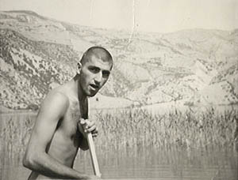
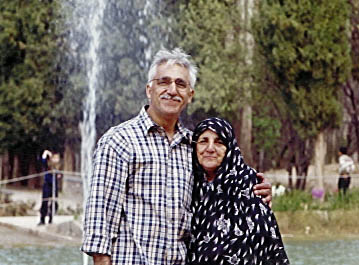

Javad Zabetian
Javad and I were in Ariamehr University in 1970's. We both were members of the university's mountaineering club. I did my first rock climbing with him. He is now an engineer working hard to exploit powder metallurgy technology in Iran.

This is a picture from 70's at Valasht lake, north of Tehran.

Javad and his mother at Kerman's Shazdeh Garden, 2000.